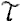
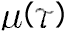
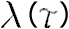
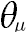
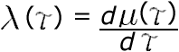
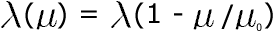
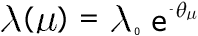
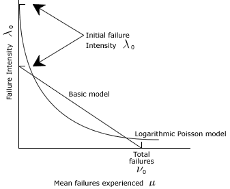

Home >> Reliability
Definition of Reliability:
The capability of software to maintain a level of
performance when used under specified conditions.
Applications
- A target and measurement in the maintenance phase
- Testing criteria
Models
There are 2 models, namely:
- Basic Reliability Model (BM)
- Logarithmic Poisson Reliablility Model (LPM)
 - time, or time interval
 - average number of failures at or in the interval
 - average number of failures per unit of time at time

- decrease in failure intensity

|  | (BM) |
|  | (LPM) |
|  |